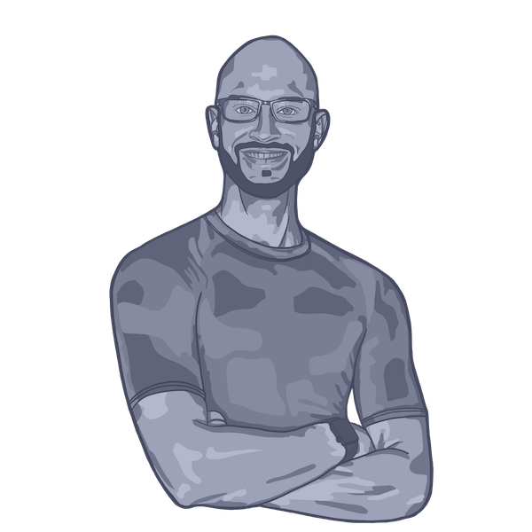

adam-james
Me, Briefly
I've been a learner and maker for my whole life.
I grew up in Canada in a large family (I have 4 siblings) with a manufacturing company and greenhouses in the back yard. I learned how to work hard and play harder when I was young, and quickly found myself playing with CNC lasers, chop saws, and welding machines in family company's metal shop.
I studied mechanical engineering and had several great internship experiences during the 5 year program.
Upon graduation I lived and worked in the Netherlands for 2 years. After that I moved back to my home town and began to work full time at the family business for 3 years.
Now I stream programming sessions, make design software tools, design products, and stay curious about the world and my life within it.
Pages
Latest Posts
RSS-saver Interactive Web Version
random-backgorund-generator (rbg)
Old Posts
These posts are from I site I started years ago. They're not perfect, but I find it useful to share them anyway.